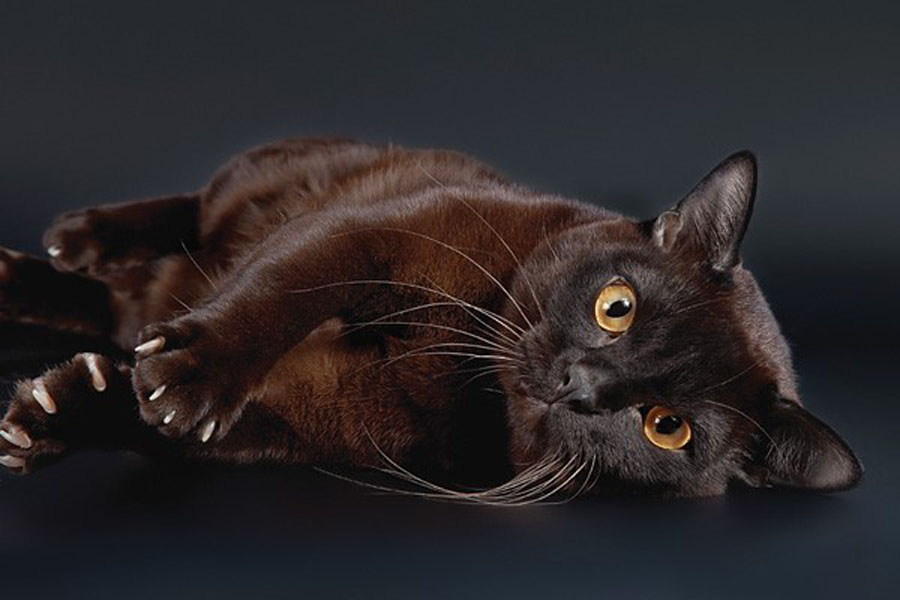

Бурманские кошки приобрели широкую популярность благодаря своему покладистому характеру: согласно описанию породы, они любят людей и прекрасно ладят с детьми. Прекрасно уживаются они и вместе с другими животными. Бурма очень уверенная в себе кошка, ловкая и проворная. Она любит прыгать и ловить добычу на лету. Игривый и озорной характер сочетается с глубокой привязчивостью: у бурманской кошки формируется тесная связь с хозяином и зависимость от него.
Среднего размера, элегантная, с изящными лапами. У нее округлая грудь и компактное, но мускулистое тело. Шерсть короткая, блестящая, на ощупь шелковистая – с атласной текстурой, которая считается одной из главных отличительных особенностей породы. Глаза темно-желтые или золотистые.
